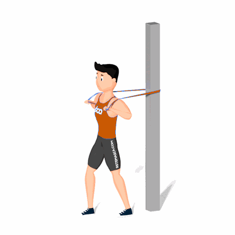

Supino Reto em Pé com Faixa Elástica

Esse exercício trabalha força e hipertrofia da região dos músculos peitorais, com enfoque aos músculos peitoral maior e menor.
Ficha Técnica
Tipo: Funcional
Grupo Muscular: Peito
Aparelho: Nenhum
Músculos: Nenhum
Como realizar
- Em pé e com as pernas no eixo ântero-posterior (uma perna para frente outra para trás);
- Fique com os ombros abduzidos e cotovelos flexionados um pouco abaixo da linha do ombro;
- Realize uma adução do ombro e uma extensão do cotovelo no plano transverso (cortando a lateral para frente), segurando a Mini Band;
- Retorne a posição inicial lentamente.
 RC STORE
RC STORE